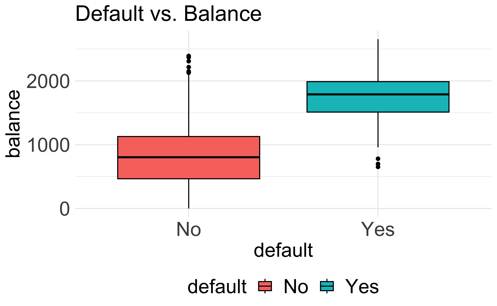
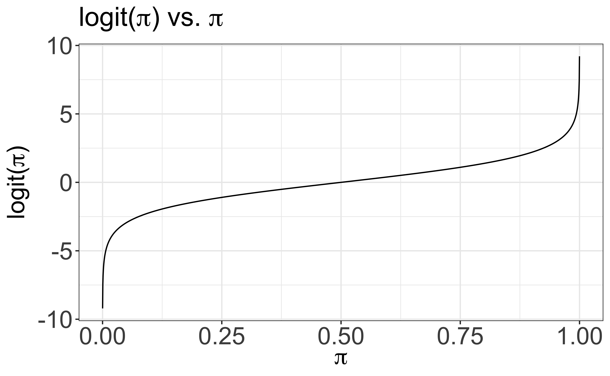
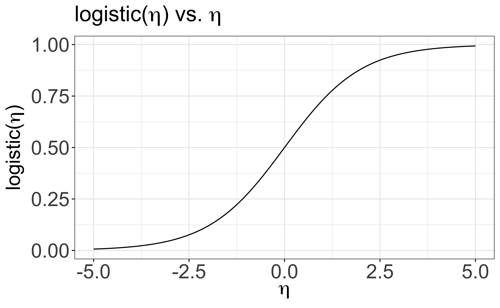
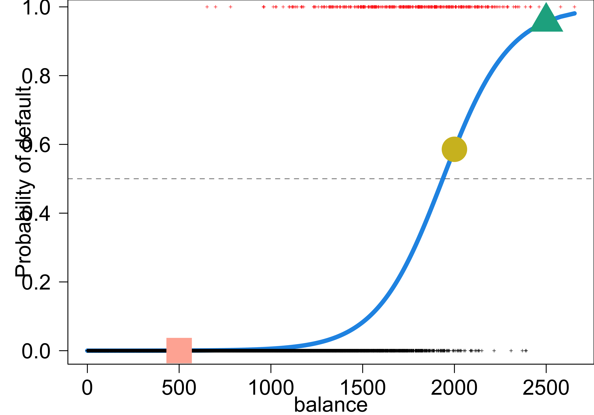

Logistic Regression 💻
MATH 4780 / MSSC 5780 Regression Analysis
Dr. Cheng-Han Yu
Department of Mathematical and Statistical Sciences
Marquette University
Department of Mathematical and Statistical Sciences
Marquette University
Classification
Regression vs. Classification
- Linear regression assumes that the response \(Y\) is numerical.
- In many situations, \(Y\) is categorical.
Normal vs. COVID vs. Smoking
fake news vs. true news
- A process of predicting categorical response is known as classification.
Regression Function \(f(x)\) vs. Classifier \(C(x)\)


Classifiers
- Often, we first predict the probability of each of the categories of \(Y\), as a basis for making the classification (soft classifier).
- We discuss the classifiers
- logistic
- probit
- complementary log-log
- Other classifiers include (MSSC 6250)
- K-nearest neighbors
- trees/random forests/boosting
- support vector machines
- convolutional neural networks, etc.
Classification Example
- Predict whether people will default on their credit card payment \((Y)\)
yesorno, based on monthly credit card balance \((X)\). - We use the (training) sample data \(\{(x_1, y_1), \dots, (x_n, y_n)\}\) to build a classifier.


Why Not Linear Regression?
\[Y =\begin{cases} 0 & \quad \text{if not default}\\ 1 & \quad \text{if default} \end{cases}\]
- \(Y = \beta_0 + \beta_1X + \epsilon\), \(\, X =\) credit card balance
What is the problem of this dummy variable approach?
Why Not Linear Regression?
- Some estimates are outside \([0, 1]\).
Why Not Linear Regression?
- First predict the probability of each category of \(Y\).
- Predict probability of
defaultusing a S-shaped curve.
Logistic Regression
Binary Response
Binomial/Proportion Response
Multinomial Response (MSSC 6250)
Framing the Problem: Binary Responses
- Treat each outcome (default \((y = 1)\) and not default \((y = 0)\)) as success and failure arising from separate Bernoulli trials.
What is a Bernoulli trial?
- A Bernoulli trial is a special case of a binomial trial when the number of trials is \(m = 1\):
- \(Bernoulli(\pi) = binomial(m = 1,\pi)\)
- exactly two possible outcomes, “success” and “failure”
- the probability of success \(\pi\) is constant
In the credit card example,
- do we have exactly two outcomes?
- do we have constant probability? \(P(y_1 = 1) = P(y_2 = 1) = \cdots = P(y_n = 1) = \pi?\)
Binary Responses with Nonconstant Probability
- Two outcomes: default \((y = 1)\) and not default \((y = 0)\)
- The probability of success \(\pi\) changes with the value of predictor \(X\)!
- With a different value of \(x_i\), each Bernoulli trial outcome \(y_i\) has a different probability of success \(\pi_i\):

\(y_i \mid x_i \stackrel{indep}{\sim} Bernoulli(\pi(x_i)) = binomial(m=1,\pi = \pi(x_i))\)
-
\(X =\)
balance. \(x_1 = 2000\) has a larger \(\pi_1 = \pi(2000)\) than \(\pi_2 = \pi(500)\) with \(x_2 = 500\) because credit cards with a higher balance tend to be default.
Logistic Regression
-
Logistic regression models a binary response \((Y)\) using predictors \(X_1, \dots, X_k\).
- \(k = 1\): simple logistic regression
- \(k > 1\): multiple logistic regression
Instead of predicting \(y_i\) directly, we use the predictors to model its probability of success, \(\pi_i\).
But how?
- Transform \(\pi \in (0, 1)\) into another variable \(\eta \in (-\infty, \infty)\). Then construct a linear predictor on \(\eta\): \(\eta_i = \beta_0 + \beta_1x_i\)
- Logit function: For \(0 < \pi < 1\)
\[\eta = logit(\pi) = \ln\left(\frac{\pi}{1-\pi}\right)\]
Logit function \(\eta = logit(\pi) = \ln\left(\frac{\pi}{1-\pi}\right)\)
Logistic Function
- The logit function \(\eta = logit(\pi) = \ln\left(\frac{\pi}{1-\pi}\right)\) takes a value \(\pi \in (0, 1)\) and maps it to a value \(\eta \in (-\infty, \infty)\).
- Logistic function: \[\pi = logistic(\eta) = \frac{\exp(\eta)}{1+\exp(\eta)} = \frac{1}{1+\exp(-\eta)} \in (0, 1)\]
- The logistic function takes a value \(\eta \in (-\infty, \infty)\) and maps it to a value \(\pi \in (0, 1)\).
- So once \(\eta\) is estimated by the linear regression, we use the logistic function to transform \(\eta\) back to the probability.
Logistic Function \(\pi = logistic(\eta) = \frac{\exp(\eta)}{1+\exp(\eta)}\)
Simple Logistic Regression Model
For \(i = 1, \dots, n\) and with one predictor \(X\): \[(Y_i \mid X = x_i) \stackrel{indep}{\sim} Bernoulli(\pi(x_i))\] \[\text{logit}(\pi_i) = \ln \left( \frac{\pi(x_i)}{1 - \pi(x_i)} \right) = \eta_i = \beta_0+\beta_1 x_{i}\]
Once we get the estimates \(\hat{\beta}_0\) and \(\hat{\beta}_1\), \[\small \hat{\pi}_i = \frac{\exp(\hat{\beta}_0+\hat{\beta}_1 x_{i} )}{1+\exp(\hat{\beta}_0+\hat{\beta}_1 x_{i})} = \frac{1}{1+\exp(-\hat{\beta}_0-\hat{\beta}_1 x_{i}))}\]
R Lab Credit Card Default
default student balance income
1 No No 730 44362
2 No Yes 817 12106
3 No No 1074 31767
4 No No 529 35704
5 No No 786 38463
6 No Yes 920 7492
7 No No 826 24905
8 No Yes 809 17600
9 No No 1161 37469
10 No No 0 29275'data.frame': 10000 obs. of 4 variables:
$ default: Factor w/ 2 levels "No","Yes": 1 1 1 1 1 1 1 1 1 1 ...
$ student: Factor w/ 2 levels "No","Yes": 1 2 1 1 1 2 1 2 1 1 ...
$ balance: num 730 817 1074 529 786 ...
$ income : num 44362 12106 31767 35704 38463 ...R Lab Simple Logistic Regression
# A tibble: 2 × 2
default avg_balance
<fct> <dbl>
1 No 804.
2 Yes 1748.logit_fit <- glm(default ~ balance, data = Default, family = binomial)
summ_logit_fit <- summary(logit_fit)
summ_logit_fit$coefficients Estimate Std. Error z value Pr(>|z|)
(Intercept) -10.6513 0.36116 -29.5 3.62e-191
balance 0.0055 0.00022 25.0 1.98e-137- \(\hat{\eta} = \text{logit}(\hat{\pi}) = \ln \left( \frac{\hat{\pi}}{1 - \hat{\pi}}\right) = -10.651 + 0.0055 \times \text{balance}\)
\(\eta\) vs. \(x\)
- \(\hat{\eta} = \text{logit}(\hat{\pi}) = \ln \left( \frac{\hat{\pi}}{1 - \hat{\pi}}\right) = -10.651 + 0.0055 \times \text{balance}\)
Interpretation of Coefficients
The ratio \(\frac{\pi}{1-\pi} \in (0, \infty)\) is called the odds of some event.
- Example: If 1 in 5 people will default, the odds is 1/4 since \(\pi = 0.2\) implies an odds of \(0.2/(1−0.2) = 1/4\).
\[\ln \left( \frac{\pi(x)}{1 - \pi(x)} \right)= \beta_0 + \beta_1x\] - Increasing \(x\) by one unit changes the log-odds by \(\beta_1\), or it multiplies the odds by \(e^{\beta_1}\).
- \(\beta_1\) does not correspond to the change in \(\pi(x)\) associated with a one-unit increase in \(x\).
- \(\beta_1\) is the change in log odds associated with one-unit increase in \(x\).
R Lab Interpretation of Coefficients
Estimate Std. Error z value Pr(>|z|)
(Intercept) -10.6513 0.36116 -29.5 3.62e-191
balance 0.0055 0.00022 25.0 1.98e-137- \(\hat{\eta} = \text{logit}(\hat{\pi}) = \ln \left( \frac{\hat{\pi}}{1 - \hat{\pi}}\right) = -10.651 + 0.0055 \times \text{balance}\)
- \(\hat{\eta}(x) = \hat{\beta}_0 + \hat{\beta}_1x\)
- \(\hat{\eta}(x+1) = \hat{\beta}_0 + \hat{\beta}_1(x+1)\)
- \(\hat{\eta}(x+1) - \hat{\eta}(x) = \hat{\beta}_1 = \ln(\text{odds}_{x+1}) - \ln(\text{odds}_{x})\)
- One-unit increase in
balanceincreases the log odds ofdefaultby 0.0055 units.
The odds ratio, \(\widehat{OR} = \frac{\text{odds}_{x+1}}{\text{odds}_{x}} = e^{\hat{\beta}_1} = e^{0.0055} = 1.005515\).
The odds of
defaultincreases by 0.55% with additional one unit of credit cardbalance.
Probability Curve
- The relationship between \(\pi(x)\) and \(x\) is not linear! \[\pi(x) = \frac{\exp(\beta_0+\beta_1 x)}{1+\exp(\beta_0+\beta_1 x)}\]
- The amount that \(\pi(x)\) changes due to a one-unit change in \(x\) depends on the current value of \(x\).
- Regardless of the value of \(x\), if \(\beta_1 > 0\), increasing \(x\) will be increasing \(\pi(x)\).
Pr(default) When Balance is 2000
\[\log\left(\frac{\hat{\pi}}{1-\hat{\pi}}\right) = -10.651+0.0055\times 2000\]
\[ \hat{\pi} = \frac{1}{1+\exp(-(-10.651+0.0055 \times 2000)} = 0.586\]
Probability Curve
What is the probability of default when the balance is 500? What about balance 2500?

- 500 balance: Pr(default) = 0
- 2000 balance, Pr(default) = 0.59
- 2500 balance, Pr(default) = 0.96
Multiple Logistic Regression Model
For \(i = 1, \dots, n\) and with \(k\) predictors: \[Y_i \mid \pi_i({\bf x}_i) \stackrel{indep}{\sim} \text{Bernoulli}(\pi_i), \quad {\bf x}_i' = (x_{i1}, \dots, x_{ik})\] \[\text{logit}(\pi_i) = \ln \left( \frac{\pi_i}{1 - \pi_i} \right) = \eta_i = \beta_0+\beta_1 x_{i1} + \cdots + \beta_k x_{ik} = {\bf x}_i'\boldsymbol \beta\]
- The \(\text{logit}(\pi_i)\) is a link function that links the linear predictor and the mean of \(Y_i\).
\[\small E(Y_i) = \pi_i = \frac{\exp(\eta_i)}{1 + \exp(\eta_i)} = \frac{\exp(\beta_0+\beta_1 x_{i1} + \cdots + \beta_k x_{ik})}{1+\exp(\beta_0+\beta_1 x_{i1} + \cdots + \beta_k x_{ik})} = \frac{\exp( {\bf x}_i'\boldsymbol \beta)}{1 + \exp({\bf x}_i'\boldsymbol \beta)}\] \[\small \hat{\pi}_i = \frac{\exp(\hat{\beta}_0+\hat{\beta}_1 x_{i1} + \cdots + \hat{\beta}_k x_{ik})}{1+\exp(\hat{\beta}_0+\hat{\beta}_1 x_{i1} + \cdots + \hat{\beta}_k x_{ik})}\]
R Lab Multiple Logistic Regression
multi_logit_fit <- glm(default ~ balance + I(income/1000), data = Default,
family = binomial)
summ_multi_logit_fit <- summary(multi_logit_fit)
summ_multi_logit_fit$coefficients Estimate Std. Error z value Pr(>|z|)
(Intercept) -11.54047 0.434756 -26.54 2.96e-155
balance 0.00565 0.000227 24.84 3.64e-136
I(income/1000) 0.02081 0.004985 4.17 2.99e-05\(\hat{\eta} = \text{logit}(\hat{\pi}) = \ln \left( \frac{\hat{\pi}}{1 - \hat{\pi}}\right) = -11.54 + 0.0056 \times \text{balance} + 0.021 \times \text{income}\)
One with a credit card balance of $1,500 and an income of $40,000 has an estimated probability of default of \[\hat{\pi} = \frac{1}{1+ \exp(-(-11.54 + 0.0056(1500) + 0.021(40)))} = 0.091\]
Why we multiply the income coefficient by 40, rather than 40,000?
Multiple Binary Outcomes
So far we consider only one binary outcome for each combination of predictors.
Often we have repeated observations or trials at each level of the regressors.
Originally, at \(X = x_i\), we have one single observation \(y_i = 0\) or \(1\).
Now, at \(X = x_i\), we have \(m_i\) trials and \(y_i\) of them are ones (successes).
Let \(y_{i,j}\) be an indicator (Bernoulli) variable taking value \(0\) or \(1\) for the \(j\)-th trial at \(x_i\).
\(y_i = y_{i,1} + y_{i,2} + \cdots + y_{i, m_i} = \sum_{j=1}^{m_i} y_{i,j}\).
Bernoulli to binomial
- Example:
- 4 dosages of a combination of drugs, \((10, 15, 20, 25)\)
- 10 patients for each dosage
- see how dosage level affects the number of cure of some disease among patients
- \(i = 1, 2, 3, 4\), \(x_1 = 10, \dots, x_4 = 25\), \(n = 4\)
- \(m_i = 10\) for each \(i\)
- \(y_i = y_{i, 1} + \cdots + y_{i, 10}\) is the number of patients whose disease is cured at \(i\)-th dosage, where \(y_{i, j} = 1\) if \(j\)-th patient is cured, \(0\) otherwise.
What is our response and any distribution can be used to model that?
Binomial Responses
The responses \(Y_i \sim binomial(m_i, \pi_i)\).
Assume \(Y_1, Y_2, \dots, Y_n\) are independent. ( \(m_i\) trials, \(y_{i, 1}, \dots, y_{i, m_i}\), are independent too by the definition of a binomial experiment )
| Number of trials | Number of successes | Regressors |
|---|---|---|
| \(m_1\) | \(y_1\) | \(x_{11}, x_{12}, \dots, x_{1k}\) |
| \(m_2\) | \(y_2\) | \(x_{21}, x_{22}, \dots, x_{2k}\) |
| \(\vdots\) | \(\vdots\) | \(\vdots\) |
| \(m_n\) | \(y_n\) | \(x_{n1}, x_{n2}, \dots, x_{nk}\) |
R Lab Strength of Fastener (LRA 13.3)
The compressive strength of an alloy fastener used in aircraft construction is being studied.
Ten loads were selected over the range 2500 – 4300 psi and a number of fasteners were tested at those loads.
The numbers of fasteners failing at each load were recorded.
R Lab Binomial Response Logistic Regression
binom_fit <- glm(cbind(y, m - y) ~ load, #<<
data = fastener, family = binomial)
binom_summ <- summary(binom_fit)
binom_summ$coef Estimate Std. Error z value Pr(>|z|)
(Intercept) -5.33971 0.545693 -9.79 1.30e-22
load 0.00155 0.000158 9.83 8.45e-23\[\hat{\pi} = \frac{e^{-5.34 + 0.0015x}}{1 + e^{-5.34 + 0.0015x}}\]
Evaluation Metrics
Sensitivity and Specificity
| 0 | 1 | |
|---|---|---|
| Labeled 0 | True Negative (TN) | False Negative (FN) |
| Labeled 1 | False Positive (FP) | True Positive (TP) |
Sensitivity (True Positive Rate) \(= P( \text{Labeled 1} \mid \text{1}) = \frac{TP}{TP+FN}\)
Specificity (True Negative Rate) \(= P( \text{Labeled 0} \mid \text{0}) = \frac{TN}{FP+TN}\)
Accuracy \(= \frac{TP + TN}{TP+FN+FP+TN}\)
More on Wiki page
R Lab Confusion Matrix
No Yes
FALSE 9625 233
TRUE 42 100- Packages:
- caret package (Classification And REgression Training)
- yardstick of tidymodels
R Lab Receiver Operating Characteristic (ROC) Curve
- Receiver operating characteristic (ROC) curve plots True Positive Rate (Sensitivity) vs. False Positive Rate (1 - Specificity)
- Packages: ROCR, pROC, yardstick::roc_curve()
R Lab Area Under Curve (AUC)
Find the area under the curve:
R Lab ROC Curve Comparison
Which model performs better?
Remember! Compare the candidates using the test data.